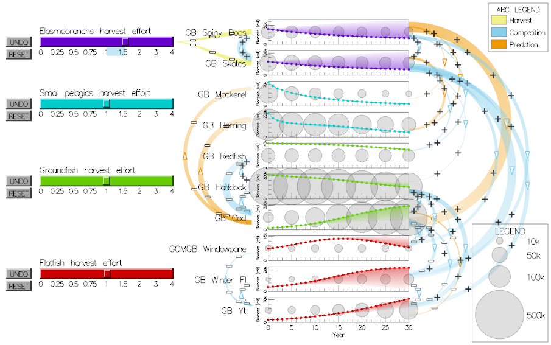

|
VTDP: Model-Based interactive Planning for System Design
For an increasing number of applications human decision making is supported by a computer model of some system. In general, such models start with some existing state of a system and run the model forward in time of a period ranging from hours to many years. The human decision maker operates in an interactive loop adjusting model parameters, representing possible alternative strategies, and combining knowledge that only they have with the model forecast to decide on a course of action.
Example 1: A Business spreadsheet is used to forecast profit margins based on assumptions about such variables as materials costs, labor costs, cost of transportation, etc. The output is a time series of forecast revenues and profits.
Example 2: A traffic behavior model is used to simulate the effect of a new intersection design on congestion patterns.
Example 3: A model of interactions between a number of commercial fish species is used to forecast the effects of changing the allowable catch.
An overview of the process of model-based interactive planning
Display Environment: Model output is displayed as time series plots, or possibly a map with a time slider. A set of sliders or input boxes allow user to change model parameters.
- User constructs a hypothesis concerning the effects of a change in some model parameter(s) relating to design alternatives, business or management decisions.
- User adjusts the parameter(s) to test the hypothesis.
- Visually query resulting changes in forecasts.
- Incorporate results into mental model of system behavior. This model incorporates features both of the computer model and prior experience relating to system behavior.
- Repeat from 1 until an acceptable solution is found
|
Cognitive and Perceptual Issues
Visual Query Support : Common queries relate to how forecast outcomes will change based on alternative system design or business decisions. It is therefore important that the time series plots show both the new forcast and a previous or baseline forecast and that differences are clear.
Cognitive Guideline:The speed of the cognitive process depends largely on the speed with which the forecast is updated as a result of changes in model parameters. Real time update is ideal.
Display Guideline :Since design decisions often have to be justified to others, a way of saving simplified views showing the effect of different alternatives can be useful.
EXAMPLE APPLICATION
The figure below shows an interface to the MSPROD fisheries model designed by Carmen St Jean and Colin Ware. The model is described in [1].The analyst can change the fishing effort on different species categories and see the resulting change in forecast instantaneously. The shaded portion of each time series plot shows the change from a previous forecast.
The arcs to the left and right show interactions between fish species representing competition and predation between different species. These are reveal the workings of the model and allow for an analysis to not only see that a forecast has changed, but also to perceive the reason for the change.

References
[1] Gamble R, Link J. (2009) Analyzing the tradeoffs among ecological and fishing effects on an example fish community: A multispecies (fisheries) production model. Ecological Modelling. 220(19).
|